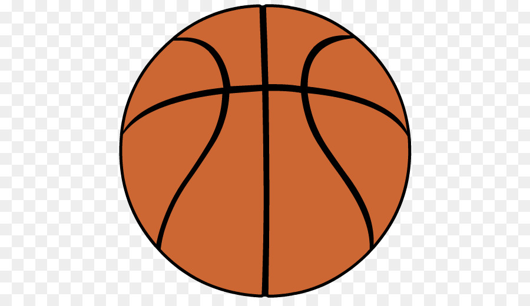
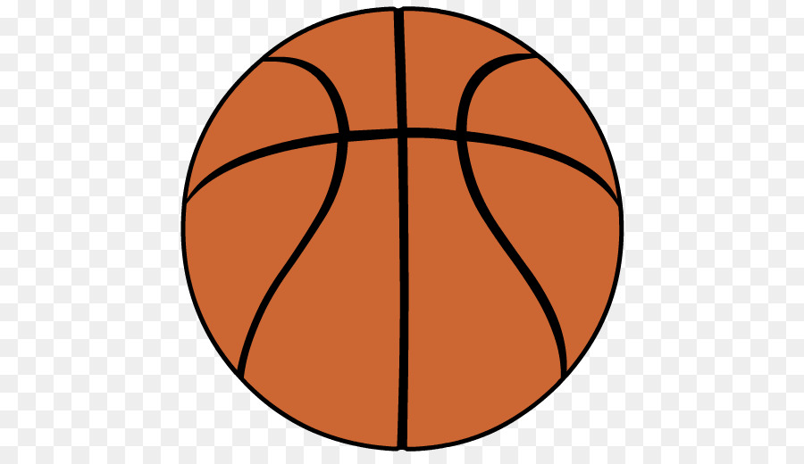
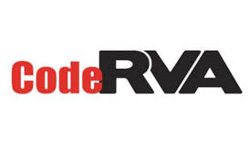

Email: india.candies@students.coderva.org
Telephone:804-678-7806
Social Media:@pinkbarbee
Lets keep in touch! Send me a message below:
Hello, my name is India Candies. I work hard to ensure that my education comes first. I would not consider myself an average junior. For example, attending CodeRVA is one of the reasons I feel the way I do. Having to balance being a student athlete is harder than most can imagine. Not only do I have to be a good student I have to make sure I am also feeding my body the right nutrition to be a great athlete. Most of the time I am a perfectionist meaning, I feel like I always I have to be perfect at what I do, when half the time that is not the case. I can not help the fact that I like to be a perfectionsists, however it does get in the way sometimes. There is nothing wrong with wanting to be perfect in what you do, however it is not always going to be that way, and I believe that is the hardest part for me to accept.
 

As young student I struggled with staying focused in class. I also had a hard time taking test and my study habbits were not the best. When I heard about CodeRVA I was very curious to know more about the new school. Growing up I was never really sure of what career choice I wanted to pursue. So I decided to give the new computer science school a try I will admit at first, the experience was a little overwhelming. Being a freshman coming right out of middle school, they expected a lot out of me. After awhile, I managed to start forming very successful study habbits. Those habbits later on helped prepare me for the tests we had every week. Not only did those study habbits help me prepare for tests, but it also helped me to be more independent. Soon after the first month or so, I start to get the rotation how things work here and realized the school is literally preparing you for the workpkace. My education was in my hands, the time for babysitting is over.

At my school, I am currently in an internship with MAXX Pontential. There are three modules you go through in the intership, Information Security, System Development, and Business Intelligence (Data). In the first module Information Security, I was the Information Security Analyst. My job was to be responsibile for planning and implementing security measures to protect computer systems, networks, and data. The second module was System Developement and in this module I was a UI/UX Designer. The UI/UX Designer is responsible for the usability and visual design of the User Interfaces, and ensuring intuitive/easy-to-use experiences. The last module was Business Intelligence (Data). An Interface is a device or program enabling a user to communicate with a computer. My role in the last module was a Scrum Master. The Scrum Master consists of holding everyone accountable for the work they were assigned and helping out anyone that needs it. My experience with Maxx Potential has been very successful so far. The Intership teaches you teamwork, independence, accountibility, responsibility, and helps to depends on collaboration at times.
I take this elective called web design. As you could probably imagine we design and fix websites. One of my biggest project was to create a web site about one of my famous role model. For my project I chose Harriet Tubman. I had to create a tribute page of her life experience and her life changing escape ventures. Another big project I had to do consists on creating a poster for a school event. I had to design a poster to persuade students to come out and support the cause of my choice. Not only did I have to desing it but I had to code it as well.